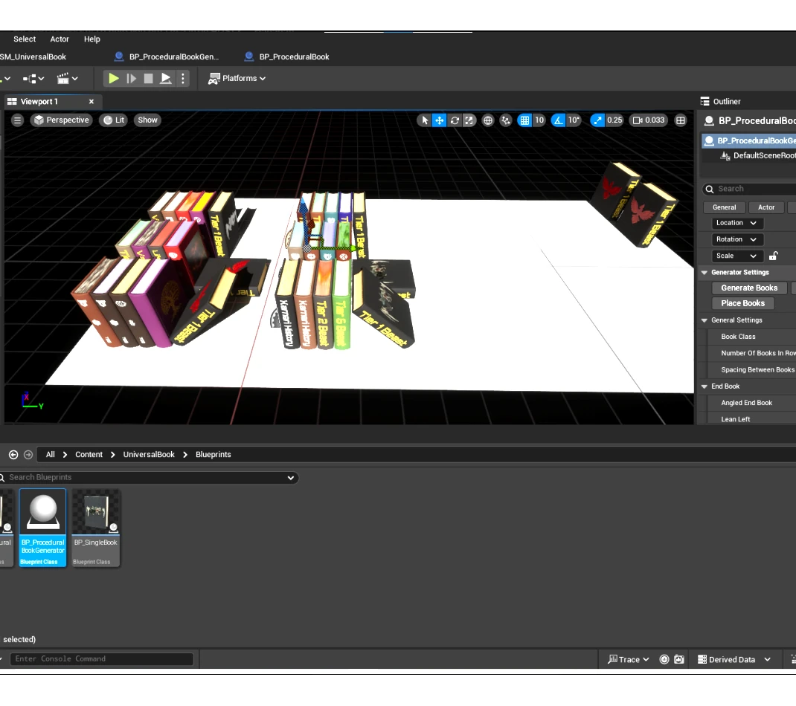
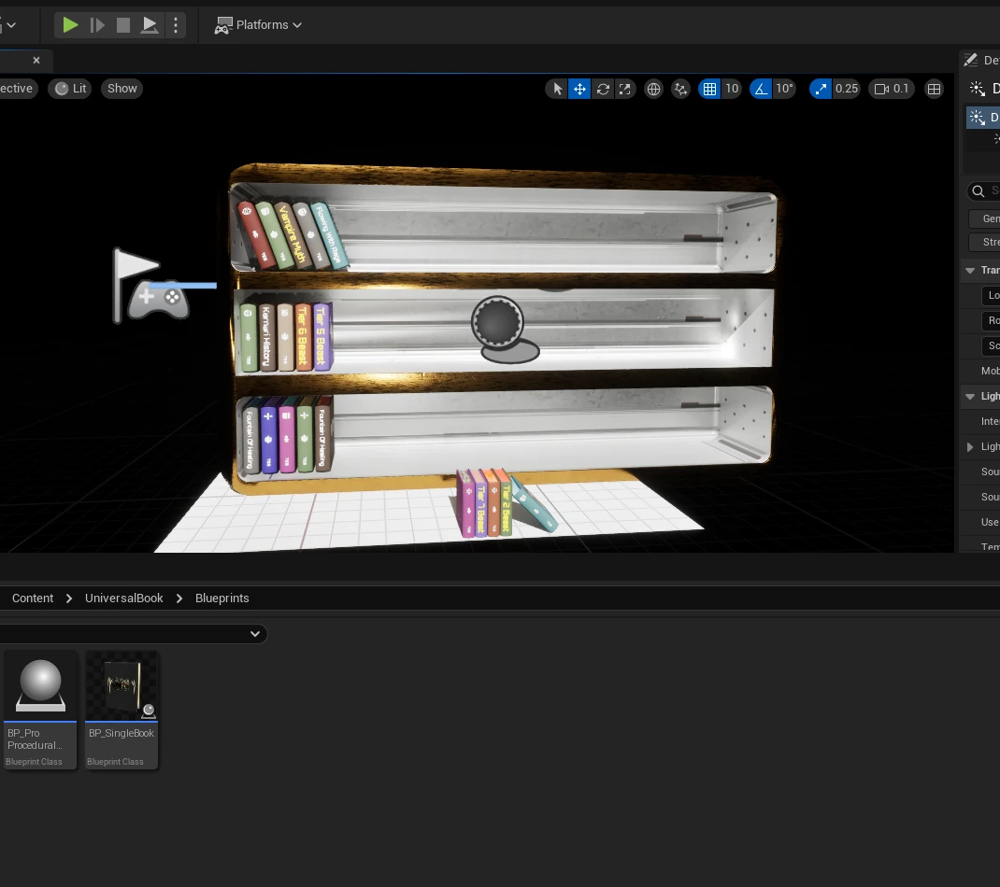
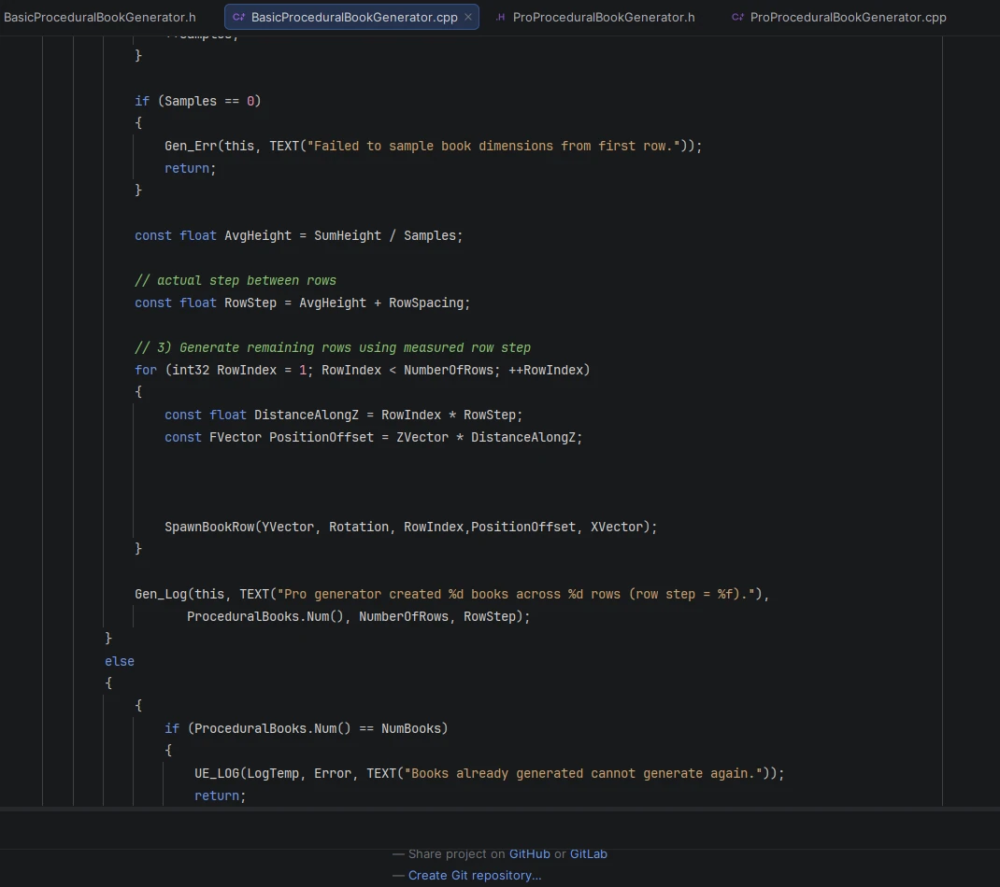
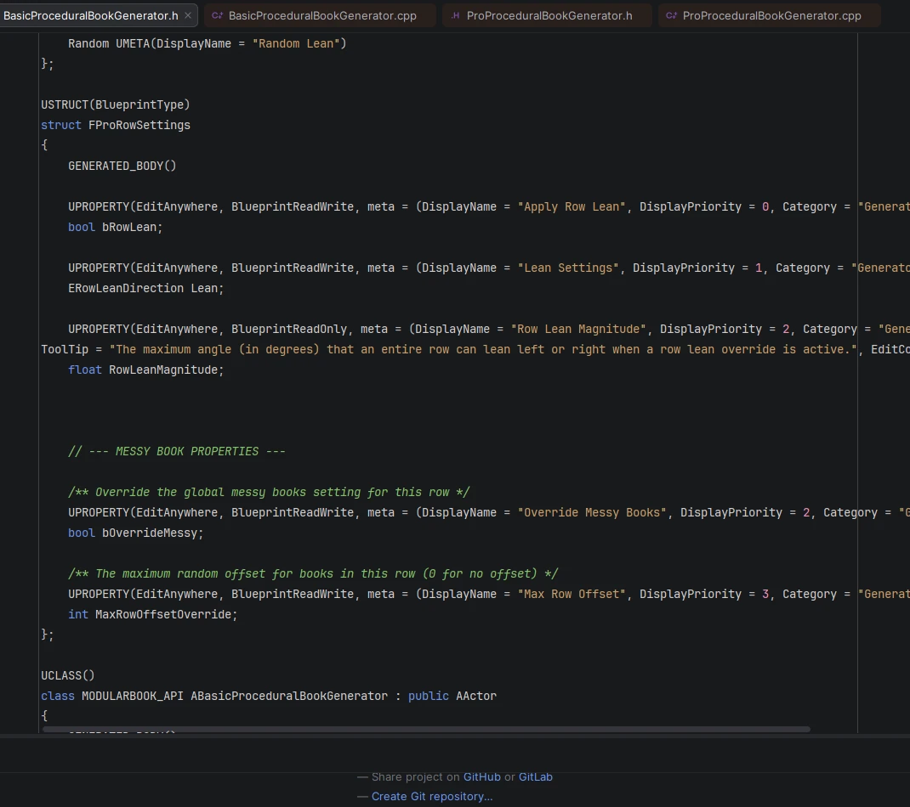
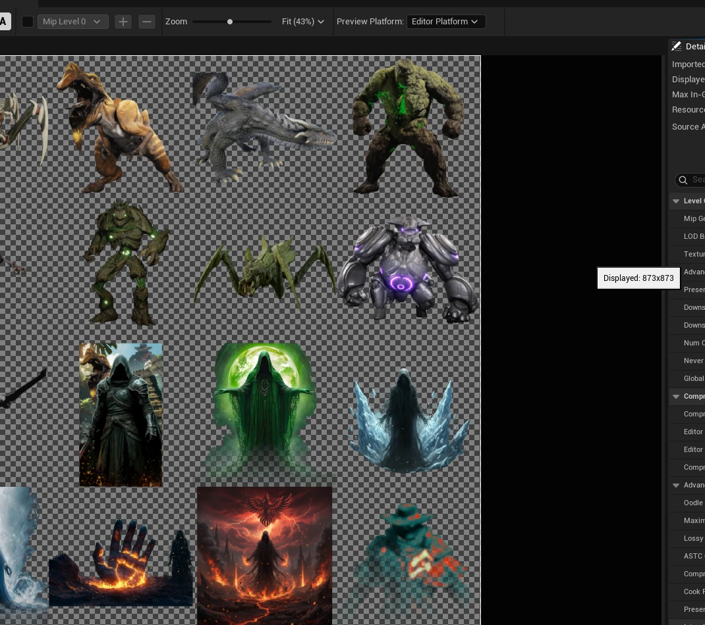
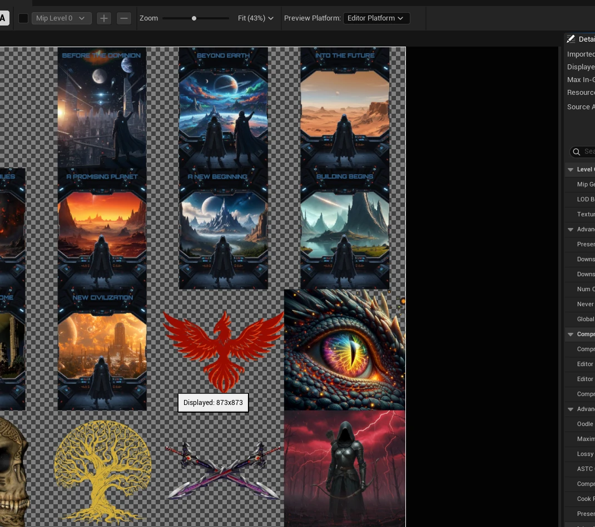
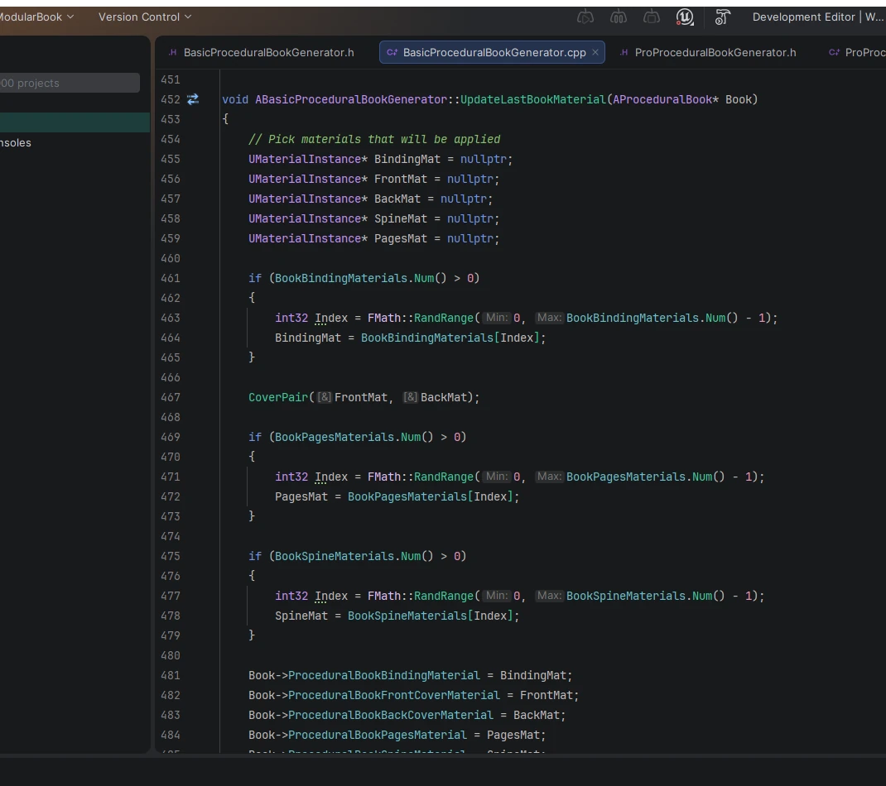
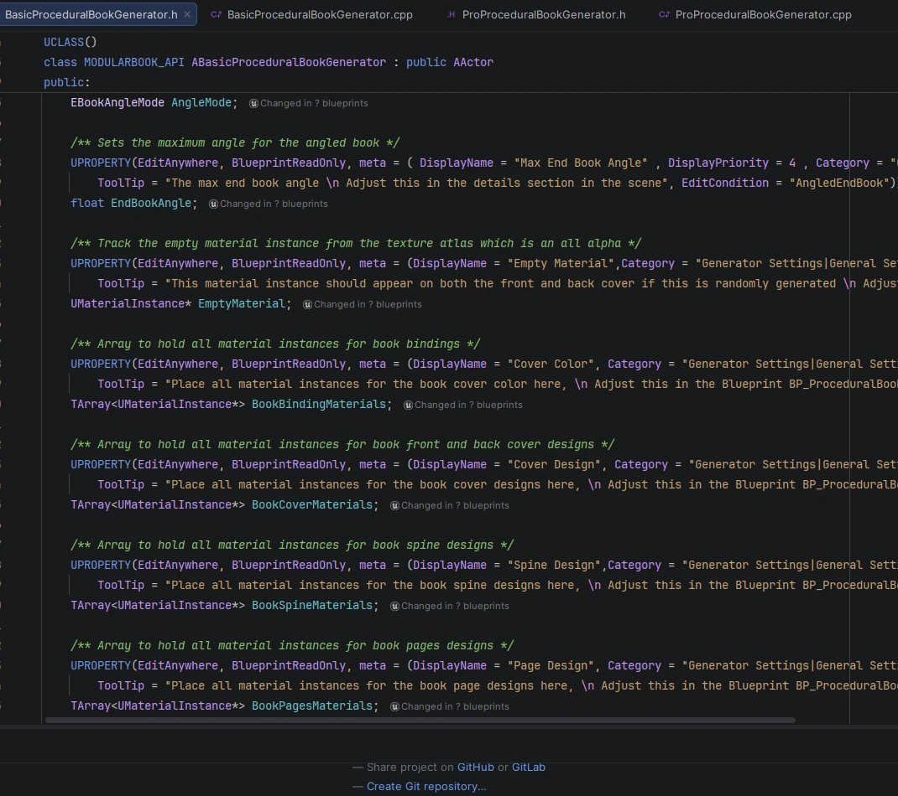

Procedural Book Generator
Complete Solo Indie Project Designed For Beastslayer: Origins.

I am still working on this project I have been coding different ways to have the books spawn in the bookshelf.


I have designed the books in a way that allows the user to select which row, direction, and amount of angle that a book should lean. The generator has a pro version and a basic version that both feature different options. The bookshelves and books can then be placed in a scene and then merged. The merging is the only step I am still working on as I am trying to figure out a way to allow the control to merge actors occur without requiring the permissions in the .ini.




I aligned these textures onto a single texture for the procedural. Some of these textures I created while some come from very popular games. These textures are aligned so that there are 16 individual textures per 1 4K texture to allow for texture atlasing for high optimization. Inside Unreal Engine you make your master material then make instances of the master while changing the texture. Once you complete that you then place all of your material instances into the respective containers and iterate over them to create many different books. This allowed me to create over 262,000 different assets utilizing 5 4K texture atlases and one empty texture to ensure no book repeats.

